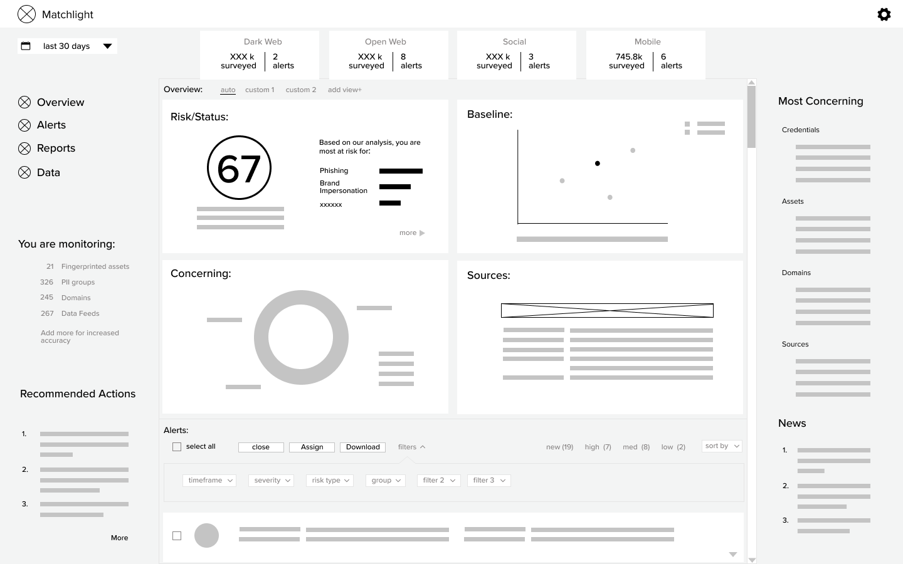
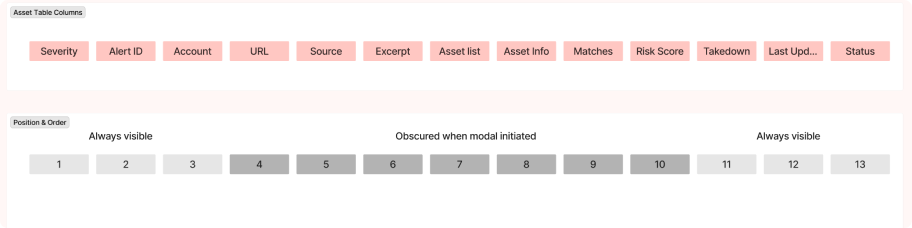
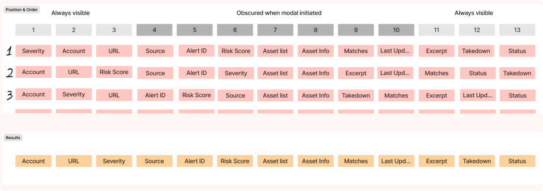
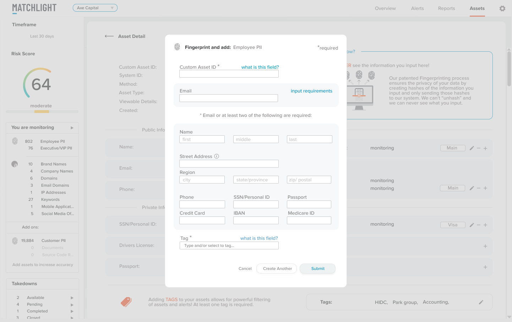
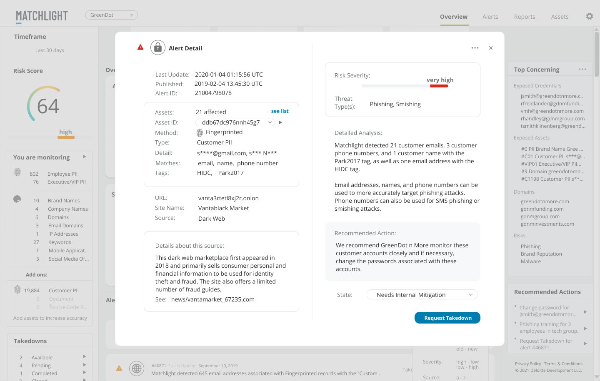
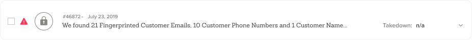
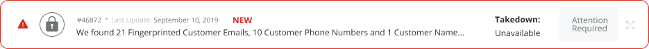

Matchlight
How we took a dark web monitoring application from MVP to acquisition in less than 2 years!
Introduction
summary
Matchlight was a Digital Risk Protection (B2B SaaS) solution that monitored for customer asset exposure across the deep, dark and open web.
Differentiated by patented Fingerprinting technology, Matchlight could “find a needle in a haystack, without seeing the needle” and subsequently alert customers.
My role:UX Research, UX Strategy and Product Design. Managed visual design contractors handling external website and marketing materials.
Deliverables: Discovery, Competitive Analysis, Interviews, Surveys, Personas, Requirements, User Stories, Card Sorting, User Flows, Wireframes, Mock-ups, Prototypes, Usability Testing, Visual Design, Data Visualization, Animation.
Tools Used: Figma, Photoshop, Illustrator, InVision, UsabilityHub, Full Story
Timeframe: 2019-2021
The Problem
Before redesign:
The original product focused solely on dark web data intelligence. Though Terbium Labs was one of the pioneers in the field, there were an increasing number of competitors with broader scope and newer, easier-to-use products.
Key Issues:
- Customer retention and sales were low.
- Customers did not understand “fingerprinting”, our key differentiator.
- Navigation was confusing.
- Users relied heavily on analysts, so scalability was limited.
- The original tool only focused on the dark web, so users used our tool in conjunction with an expensive suite of other tools.
The Solution
All New Matchlight:
- A clean "social media" inspired layout.
- A feed of curated & combined alerts.
- Less clicking and “digging”.
- Expanded coverage across open web, social media and mobile.
- Automated report generation for scalability.
- Increased context and actionable insights.
My Process
Research
We kicked off with 6 weeks of discovery, including:
- Interviews with stakeholders, customer service and sales team members.
- Interviews and remote Field Studies with our analysts and client users.
- Competitive Analysis of 9 competitors, with 2 deep dives.
- Personas for 3 key users.
- Usability Testing of low fidelity wireframes, and high fidelity prototypes.
- Card Sorting for navigation and organizing tables.
Stakeholder Interviews
Why Should We Build This?
Who Are Our Target Users?
Who Are Our Competitors?
What Determines Success?
Key Insights:
- Our differentiator STILL offers unparalleled security.
- Stakeholders believed our customers' priority was depth of information (not true.)
- Our analysts were using the tool more than our customers, we wanted customers to use it.
- Recorded Future and ZeroFox were our main competitors.
- Goals: Increase customer retention and sales. Scale customers without hiring additional analysts.
User Interviews & Field Studies
What Does Your Day Look Like?
What Are Your Biggest Frustrations?
Show Me How You Create A Report?
What Do You Wish Matchlight Could Do?
Key Insights:
- Analysts spent a lot more time using the application than our clients did. Some clients even avoided logging in!
- Different types of alerts were in different sections of the platform, but customers didn’t even know how they differed.
- Analysts spent a lot of time creating custom reports and emailing clients.
- Customers wanted to quickly access a summary of information, not dig for depth and context. This is why they relied heavily on reports and our analysts.
Personas
We created personas to represent the three key users of our tool.
We found that our own analysts currently used the tool more than our clients did.
BUT, we wanted to change that.
So we focused two personas on the desired users that we would like to attract more engagement from.
competitive analysis
Many competitors were vying for prominence in this space. I reviewed a lot of marketing pages and youtube videos to get a glimpse of their platforms. Two stood out:
Recorded Future offered depth of information, in a very clean, minimal and modern package. The color palettes they used for data visualizations were effective for communicating distinctions between types of data. The minimal look kept emphasis on the data.
ZeroFox had a very intuitive information architecture, and summarized information nicely. Their initial dashboard was a very effective summary of relevant information, and included a contextual story arc.
So, we wondered what would it look like if Recorded Future and ZeroFox had a baby?
Early wireframes
Usability tests on early wireframes led to:
- A Social Media inspired layout. Combining the different alert types into one feed and keeping that feed on the dashboard.
- Improved input system to help clients correlate fingerprinted assets to their own databases.
- A tabulation and categorization of which assets were being monitored on the dashboard, for improved context.
- New “Risk Score” on both the account and alert level.
- Added “Top Concerning” and “Recommended Actions” lists on main dashboard.
Card Sorting
Empty Card Sort to determine column order. 
Aggregated Results: 
Using FigJam or Optimal Workshop, I conducted a series of card sorts for making decisions about information architecture, navigation and even table column order.
In the example above, I conducted card sorting exercises with 9 participants so that I could optimize column order, especially as modals could obscure visibility of columns sometimes
High Fidelity Mockups
- We balanced clean, calm and “minimal” with supplying more information and functionality on every screen.
- We tested charts for accessibility across vision differences, especially when presented as thin lines and dots.
- Introduced icons for key, recurring concepts.
- Lots of greys (tested for contrast) and white space.
- Color used sparingly and strategically- reserved for emphasis, and communcation through data visualization.
- 4 categories for our color palette
- Brand
- Traffic light for hierarchical data
- Equal weight, but distinct colors for categorical data (no traffic light colors)
- Gradients for relational data
Testing The Prototype
We created a prototype in Invision to usability test our early prototype. A few of the features we added based on these tests:
- A drop-down option for admins only, to switch views between admin portal and multiple client views.
- Alerts to open in modals. Analysts preferred this, so they could contextualize against the list of alerts.
Before:
After:
 - Two different kinds of status.
System generated, user specific- which indicates whether an alert is "New" or "Updated" since this particular user last logged in.
User generated, user universal- a kind of light workflow option, to indicate whether an alert as Acknowledged, Mitigation in Progress, Closed, etc. This status will be the same for all users.
Before:

After:

Ongoing Improvements
In less than two years, we introduced many new features based on regular user feedback and testing. Some included:
- Pre-populated alert templates, to streamline analyst input.
- A library of found sites for automation of alert population.
- A system for bypassing captcha on dark web sites.
- Capability to identify and merge mirror sites, for streamlined reporting.
- Increased workflow capabilities to assign alerts and offer increased status visibility.
- Dark web snapshots to minimize users’ need to access the dark web.
- More strategically placed education about “Fingerprinting”:
Impact
- Customer retention increased from 50% to 100% in the first year alone.
- Sales to new customers tripled the first year.
- We were able to support the increase in customers without hiring new analysts.
- Customers routinely commented on how easy and intuitive the tool was to use.
- Some customers told us they liked to use our tool in conjunction with Recorded Future. This was a new market angle we had not previously considered.
- We received 5 stars on reviews via Gartner.
- Within two years, the product was acquired by Deloitte.
Conclusion
conclusion
Matchlight was created by early stage start-up Terbium Labs so that risk could be monitored, without increasing risk (by turning confidential data over to a third party for monitoring.)
I joined Terbium Labs in June of 2019, as part of a new product team, tasked with revitalizing a product that still offered unique capabilities but was lagging behind competitors.
As the sole product / UX designer, I worked in close collaboration with stakeholders, product management and engineering teams to research, design, test and build quickly.
We had a functional prototype of our MVP to bring to Black Hat USA by August 3, 2019, and a fully functioning product by January 2020.
On June 15, 2021, Matchlight was acquired by Deloitte as part of their cybersecurity suite of tools.
Press: